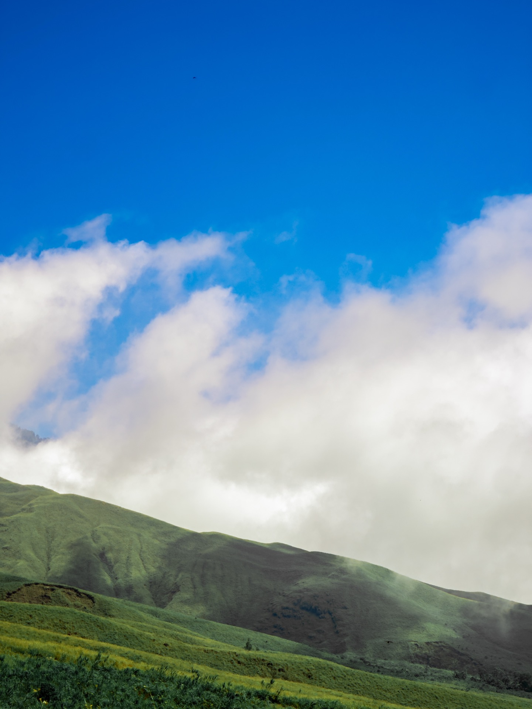
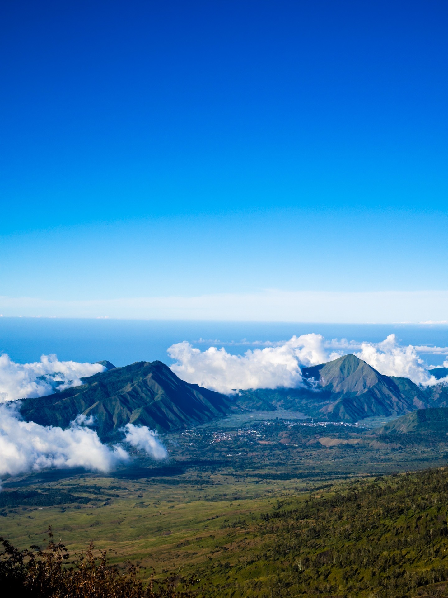
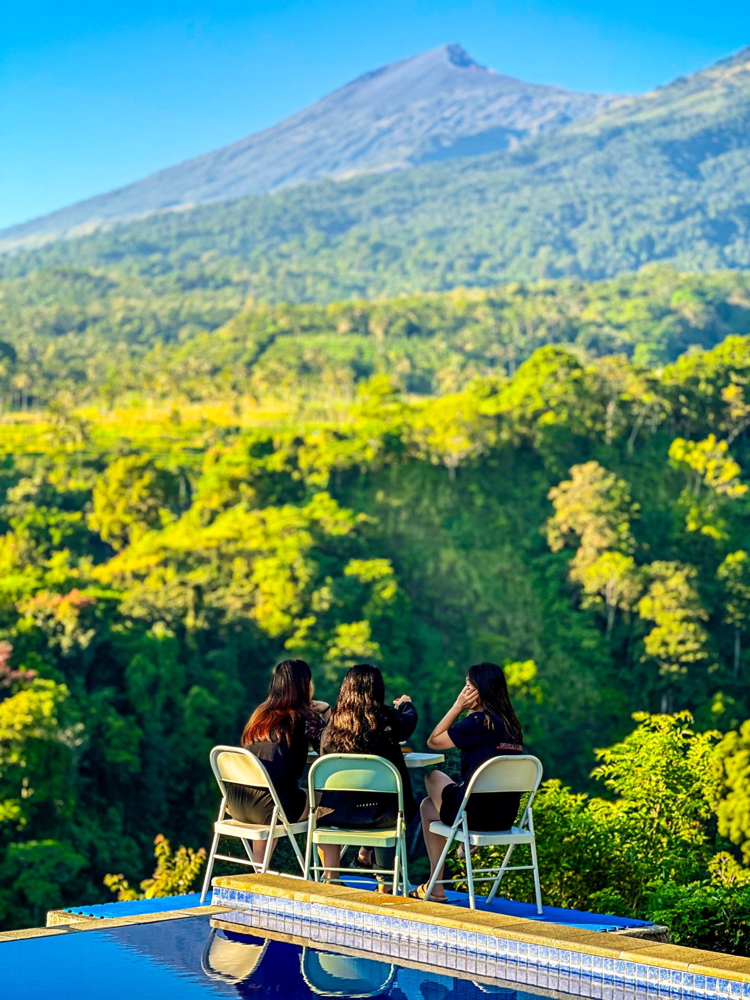
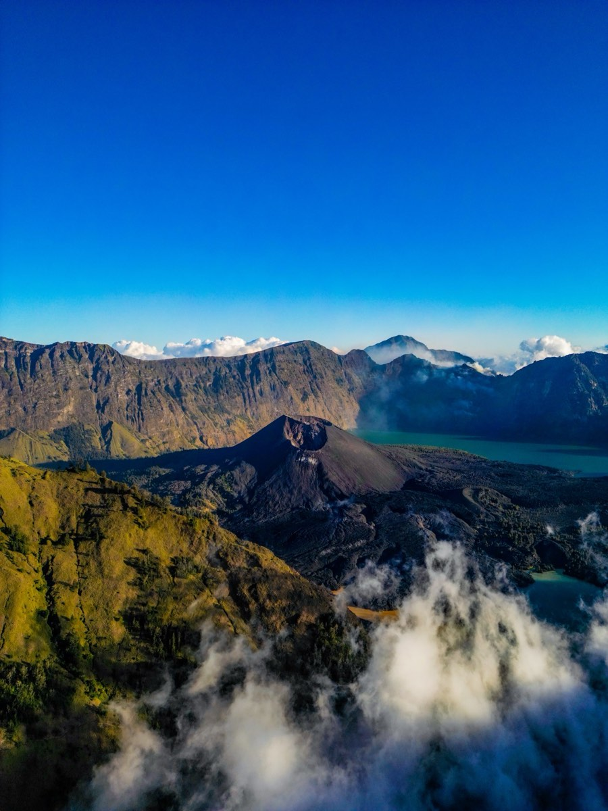

Photo Gallery
Mount Rinjani · Through My Lens
51 photos from the journey. Tap any photo to view full screen.




One random text from a friend. Six days. A volcanic crater, shooting stars, a summit proposal, and the bluest sea I have ever seen.
Some adventures are carefully planned for years. But my Mount Rinjani trip was completely different.
Honestly, hiking Mount Rinjani was never even on my bucket list. I did not even know what the mountain looked like before the trip.
Everything started because of my friend Katherine, whom I met during the first year of building So Hikers Malaysia. Back then, she joined our hikes together with a group of friends we met along the journey. Over time, we explored many mountains around Malaysia together — from smaller hikes to tougher adventures like Trans Naning and Trans Jerging.
Then one random day, she suddenly texted me:
"Want go Rinjani or not?"
At that moment, I was busy and had not even replied yet. Then she sent another message herself:
"You must go. Later I put you inside the group ah."
I was like… "What?"
But somehow, I just went with the flow. And honestly, that random decision became one of the most unforgettable adventures of my life.
The funniest part is — the Mount Rinjani trip happened one month before my Mount Kinabalu trip. Rinjani was in June. Mount Kinabalu was in July. And I had never climbed both mountains before.
Our full trip was 6 days 5 nights:
Until the day we arrived in Lombok, I still did not really know what Mount Rinjani looked like. But the moment we reached the area near the mountain, I was immediately shocked. The scenery felt unreal.
On the first hiking day heading toward our campsite, I kept getting amazed by the views around me. Everything looked fake. The mountains, the cliffs, the landscapes…
"I honestly felt like I was inside Jurassic World."
When we finally reached our first campsite, we saw our first clear view of the volcano crater and the beautiful lake below. That moment completely blew my mind.
Immediately, I took out my DJI Mini 3 Pro and started capturing everything from above. The view was just too beautiful not to film.

Mount Rinjani crater lake · drone shot by Kay Du · DJI Mini 3 Pro
After resting inside the tent for a while, I suddenly heard my friends saying: "Eh come out quickly!"
When I stepped outside, I saw one of the most unbelievable sunsets of my life. The orange light from the sunset reflected directly onto our faces. It honestly looked fake. Too beautiful. Too magical. Too unreal.
I even used my drone to record a timelapse of the sunset because I knew this was the kind of moment I would never forget.
Then night slowly arrived. And for the first time in my life, I saw a sky completely filled with stars. Not just a few stars. Thousands of stars.
It was one of those moments where you just stand there quietly without saying anything because your brain cannot fully process how beautiful everything looks.
The orange light from the sunset reflected directly onto our faces. It honestly looked fake. Too beautiful. Too magical. Too unreal. — Kay Du, Hiking Drone Creator
That night, we prepared for the midnight summit hike toward the peak of Mount Rinjani. But this summit attempt was extra special — one of our friends planned to propose to his girlfriend at the peak. She is now his wife today.
Our roles were all planned properly:
The Plan
That was the plan… but once the summit hike started, everything became chaos.
The weather was extremely cold. The wind was crazy strong. My hands were shaking badly from the cold and honestly started hurting. I even joked to myself that I was getting frostbite.
Then while hiking upward, our group slowly became separated. At that moment, I only had one thought:
"I cannot miss the proposal moment."
So I rushed upward as fast as possible. The path to the summit was insanely difficult. You take one step forward and slide back two steps because of the volcanic sand.
Eventually, I discovered the fastest method: Crawling.
Honestly, crawling was way faster and more stable — even though I was eating dust along the way.
When I finally reached the summit, Wen Xiang was already there. But surprisingly, I could not see the couple or Katherine yet. Last minute, we changed the plan — Wen Xiang handled the photos while passing the ring to the boyfriend.
And thankfully… the proposal was successful. 💍
Originally, I wanted to capture the proposal using my drone. But the wind at the summit was too dangerous and risky for flying. So instead, I used the groom's GoPro to capture one of the most important moments of their lives.
Mission completed.
51 photos from the journey. Tap any photo to view full screen.



Our original trekking plan was to continue through the famous Torean route. But in the end, we decided to descend one day earlier than planned. Some people continued on, but our group came down earlier.
And honestly? I was so happy because I finally could shower properly and use a real toilet.
At the top of Mount Rinjani, there are basically no proper toilets. The mountain guides simply dig one hole for everyone to share. The smell was honestly terrible.
But somehow, when the scenery around you is that beautiful, you just accept everything. Maybe one day we will return again and complete the full route properly.
After finishing the hike, we spent time relaxing at the Gili Islands. And honestly, the sea there looked insane.
The water was so blue that it almost looked fake — like chemical blue color. It was the first time in my life seeing such a bright and clear blue ocean with my own eyes.
"Life there felt very slow and peaceful."
After the craziness of hiking Rinjani, the island became the perfect place to rest and enjoy the moment.
Gili Island · drone shot by Kay Du · that blue is real, not edited
Looking back now, it still feels crazy that this entire journey happened because of one random text message from a friend. I never expected Mount Rinjani to become one of the most memorable adventures of my life.
This trip reminded me that sometimes the best experiences in life are the ones we never planned for. And honestly, that is one reason why I love hiking so much.
"Because somewhere out there, another unforgettable story is always waiting."
Free GPX trail files, mountain stories, and drone footage from across Malaysia and beyond.
View All GPX Trails